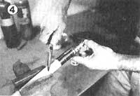

[4] after S fastening and grinding I the bolts, strengthening S the working end with 5 wire laid in a narrow | loop along the neck 3 and then wrapped to E the loop eye, threaded, S and drawn under the I coiled collar.